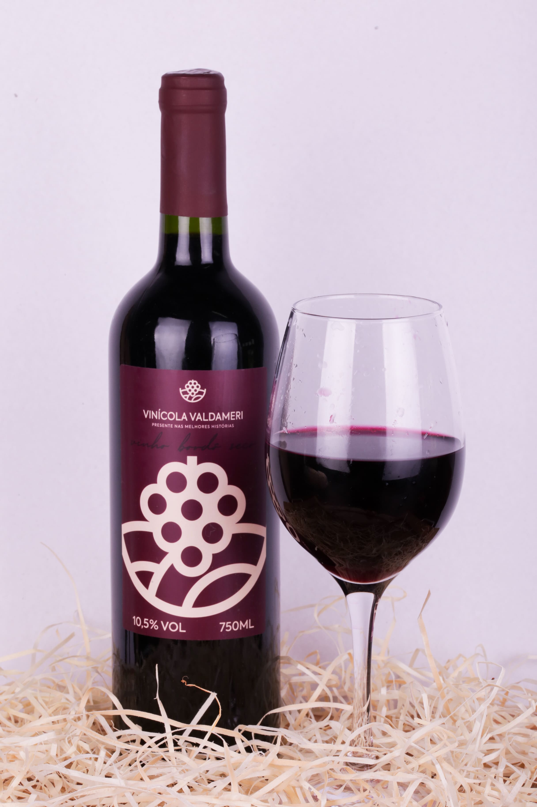

Produtos
Abaixo você visualiza nossa ampla seleção de vinhos da casa!

- Vinho Tinto Seco Colonial Sabor do Campo
- Por R$ 44,00
- Frutas afrodisíacas coletadas dos campos coloniais do oeste-africano, combinados harmoniosamente para a sua melhor experiência. Cura de no mínimo 6 anos antes de disponibilização ao mercado.
- ★ 4,3/5
- 56 Avaliações
- Vinho Branco - Brisa do Vale - Especial da Casa
- Por R$ 150,00
- "Brisa do vale" – Remete à leveza, frescor e suavidade dos vinhos brancos, evocando uma sensação de frescor que traz prazer e tranquilidade ao paladar com delicadeza.
- ★ 4,9/5
- 70 Avaliações

- Vinho Tinto - Noite Rubra
- Por R$ 100,00
- "Noite Rubra" – Evoca intensidade, profundidade e elegância, características dos vinhos tintos, com cura de 6 anos, oferecendo uma experiência refinada e marcante a cada gole repleto de complexidade.
- ★ 4,7/5
- 60 Avaliações
- Vinho Rosé - Pétala de Verão
- Por R$ 60,00
- "Pétala de Verão" – Sugere delicadeza, suavidade e frescor, com um clima descontraído que traduz a essência leve e refrescante do rosé, perfeito para momentos de prazer.
- ★ 3/5
- 17 Avaliações